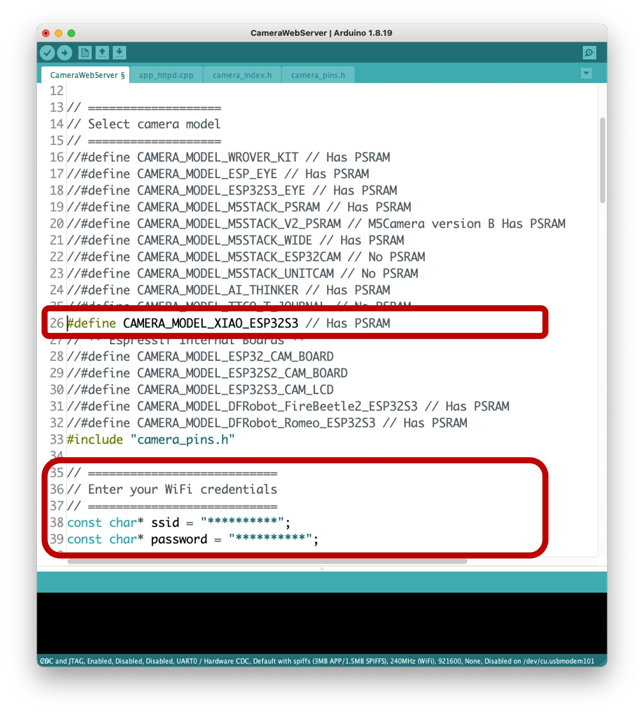

1 XIAO ESP32S3 Sense Setup

1.1 Introduction
The XIAO ESP32S3 Sense is Seeed Studio’s affordable development board, which integrates a camera sensor, digital microphone, and SD card support. Combining embedded ML computing power and photography capability, this development board is a great tool to start with TinyML (intelligent voice and vision AI).
XIAO ESP32S3 Sense Main Features
- Powerful MCU Board: Incorporate the ESP32S3 32-bit, dual-core, Xtensa processor chip operating up to 240 MHz, mounted multiple development ports, Arduino / MicroPython supported
- Advanced Functionality: Detachable OV2640 camera sensor for 1600 * 1200 resolution, compatible with OV5640 camera sensor, integrating an additional digital microphone
- Elaborate Power Design: Lithium battery charge management capability offers four power consumption models, which allows for deep sleep mode with power consumption as low as 14μA
- Great Memory for more Possibilities: Offer 8MB PSRAM and 8MB FLASH, supporting SD card slot for external 32GB FAT memory
- Outstanding RF performance: Support 2.4GHz Wi-Fi and BLE dual wireless communication, support 100m+ remote communication when connected with U.FL antenna
- Thumb-sized Compact Design: 21 x 17.5mm, adopting the classic form factor of XIAO, suitable for space-limited projects like wearable devices

Below is the general board pinout:

For more details, please refer to the Seeed Studio WiKi page:
https://wiki.seeedstudio.com/xiao_esp32s3_getting_started/
1.2 Installing the XIAO ESP32S3 Sense on Arduino IDE
On Arduino IDE, navigate to File > Preferences, and fill in the URL:
https://raw.githubusercontent.com/espressif/arduino-esp32/gh-pages/package_esp32_dev_index.json
on the field ==> Additional Boards Manager URLs
Next, open boards manager. Go to Tools > Board > Boards Manager… and enter with esp32. Select and install the most updated and stable package (avoid alpha versions) :
⚠️ Attention
Alpha versions (for example, 3.x-alpha) do not work correctly with the XIAO and Edge Impulse. Use the last stable version (for example, 2.0.11) instead.
On Tools, select the Board (XIAO ESP32S3):
Last but not least, choose the Port where the ESP32S3 is connected.
That is it! The device should be OK. Let’s do some tests.
1.3 Testing the board with BLINK
The XIAO ESP32S3 Sense has a built-in LED that is connected to GPIO21. So, you can run the blink sketch as it is (using the LED_BUILTIN Arduino constant) or by changing the Blink sketch accordingly:
#define LED_BUILT_IN 21
void setup() {
pinMode(LED_BUILT_IN, OUTPUT); // Set the pin as output
}
// Remember that the pin work with inverted logic
// LOW to Turn on and HIGH to turn off
void loop() {
digitalWrite(LED_BUILT_IN, LOW); //Turn on
delay (1000); //Wait 1 sec
digitalWrite(LED_BUILT_IN, HIGH); //Turn off
delay (1000); //Wait 1 sec
}Note that the pins work with inverted logic: LOW to Turn on and HIGH to turn off.
1.4 Connecting Sense module (Expansion Board)
When purchased, the expansion board is separated from the main board, but installing the expansion board is very simple. You need to align the connector on the expansion board with the B2B connector on the XIAO ESP32S3, press it hard, and when you hear a “click,” the installation is complete.
As commented in the introduction, the expansion board, or the “sense” part of the device, has a 1600x1200 OV2640 camera, an SD card slot, and a digital microphone.
1.5 Microphone Test
Let’s start with sound detection. Go to the GitHub project and download the sketch: XIAOEsp2s3_Mic_Test and run it on the Arduino IDE:
When producing sound, you can verify it on the Serial Plotter.
Save recorded sound (.wav audio files) to a microSD card.
Now, the onboard SD Card reader can save .wav audio files. To do that, we need to habilitate the XIAO PSRAM.
ESP32-S3 has only a few hundred kilobytes of internal RAM on the MCU chip. This can be insufficient for some purposes, so up to 16 MB of external PSRAM (pseudo-static RAM) can be connected with the SPI flash chip. The external memory is incorporated in the memory map and, with certain restrictions, is usable in the same way as internal data RAM.
For a start, Insert the SD Card on the XIAO as shown in the photo below (the SD Card should be formatted to FAT32).
- Download the sketch Wav_Record, which you can find on GitHub.
- To execute the code (Wav Record), it is necessary to use the PSRAM function of the ESP-32 chip, so turn it on before uploading.: Tools>PSRAM: “OPI PSRAM”>OPI PSRAM
- Run the code
Wav_Record.ino - This program is executed only once after the user **turns on the serial monitor. It records for 20 seconds and saves the recording file to a microSD card as “arduino_rec.wav.”
- When the “.” is output every 1 second in the serial monitor, the program execution is finished, and you can play the recorded sound file with the help of a card reader.
The sound quality is excellent!
The explanation of how the code works is beyond the scope of this tutorial, but you can find an excellent description on the wiki page.
1.6 Testing the Camera
To test the camera, you should download the folder take_photos_command from GitHub. The folder contains the sketch (.ino) and two .h files with camera details.
- Run the code:
take_photos_command.ino. Open the Serial Monitor and send the commandcaptureto capture and save the image on the SD Card:
Verify that
[Both NL & CR]are selected on Serial Monitor.
Here is an example of a taken photo:
1.7 Testing WiFi
One of the XIAO ESP32S3’s differentiators is its WiFi capability. So, let’s test its radio by scanning the Wi-Fi networks around it. You can do this by running one of the code examples on the board.
Go to Arduino IDE Examples and look for WiFI ==> WiFIScan
You should see the Wi-Fi networks (SSIDs and RSSIs) within your device’s range on the serial monitor. Here is what I got in the lab:
Simple WiFi Server (Turning LED ON/OFF)
Let’s test the device’s capability to behave as a WiFi Server. We will host a simple page on the device that sends commands to turn the XIAO built-in LED ON and OFF.
Like before, go to GitHub to download the folder using the sketch SimpleWiFiServer.
Before running the sketch, you should enter your network credentials:
const char* ssid = "Your credentials here";
const char* password = "Your credentials here";You can monitor how your server is working with the Serial Monitor.
Take the IP address and enter it on your browser:
You will see a page with links that can turn the built-in LED of your XIAO ON and OFF.
Streaming video to Web
Now that you know that you can send commands from the webpage to your device, let’s do the reverse. Let’s take the image captured by the camera and stream it to a webpage:
Download from GitHub the folder that contains the code: XIAO-ESP32S3-Streeming_Video.ino.
Remember that the folder contains the.ino file and a couple of .h files necessary to handle the camera.
Enter your credentials and run the sketch. On the Serial monitor, you can find the page address to enter in your browser:
Open the page on your browser (wait a few seconds to start the streaming). That’s it.
Streamlining what your camera is “seen” can be important when you position it to capture a dataset for an ML project (for example, using the code “take_phots_commands.ino”.
Of course, we can do both things simultaneously: show what the camera sees on the page and send a command to capture and save the image on the SD card. For that, you can use the code Camera_HTTP_Server_STA, which can be downloaded from GitHub.
The program will do the following tasks:
- Set the camera to JPEG output mode.
- Create a web page (for example ==> http://192.168.4.119//). The correct address will be displayed on the Serial Monitor.
- If server.on (“/capture”, HTTP_GET, serverCapture), the program takes a photo and sends it to the Web.
- It is possible to rotate the image on webPage using the button [ROTATE]
- The command [CAPTURE] only will preview the image on the webpage, showing its size on the Serial Monitor
- The
[SAVE]command will save an image on the SD Card and show the image on the browser. - Saved images will follow a sequential naming (image1.jpg, image2.jpg.
This program can capture an image dataset with an image classification project.
Inspect the code; it will be easier to understand how the camera works. This code was developed based on the great Rui Santos Tutorial ESP32-CAM Take Photo and Display in Web Server, which I invite all of you to visit.
Using the CameraWebServer
In the Arduino IDE, go to File > Examples > ESP32 > Camera, and select CameraWebServer
You also should comment on all cameras’ models, except the XIAO model pins:
#define CAMERA_MODEL_XIAO_ESP32S3 // Has PSRAM
Do not forget the Tools to enable the PSRAM.
Enter your wifi credentials and upload the code to the device:

If the code is executed correctly, you should see the address on the Serial Monitor:

Copy the address on your browser and wait for the page to be uploaded. Select the camera resolution (for example, QVGA) and select [START STREAM]. Wait for a few seconds/minutes, depending on your connection. Using the [Save] button, you can save an image to your computer download area.
That’s it! You can save the images directly on your computer for use on projects.
1.8 Conclusion
The XIAO ESP32S3 Sense is flexible, inexpensive, and easy to program. With 8 MB of RAM, memory is not an issue, and the device can handle many post-processing tasks, including communication.
You will find the last version of the codes on the GitHub repository: XIAO-ESP32S3-Sense.